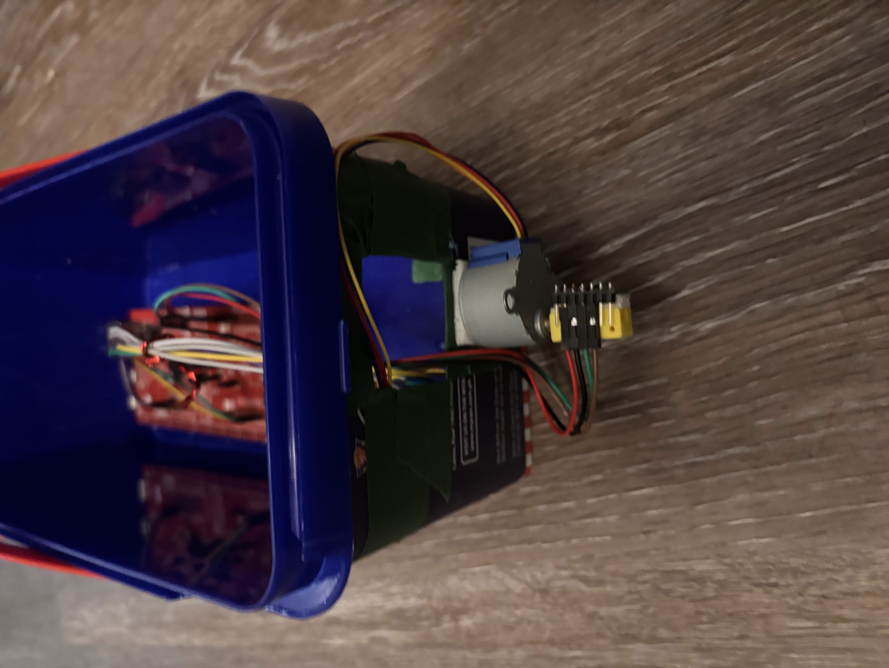
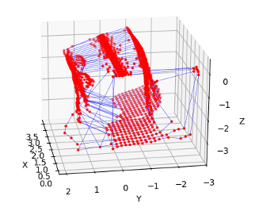
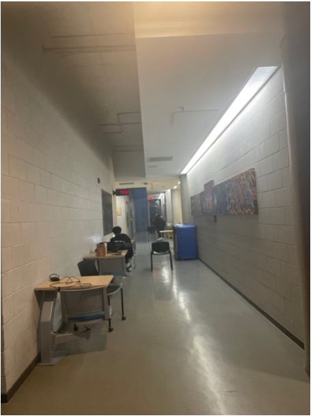
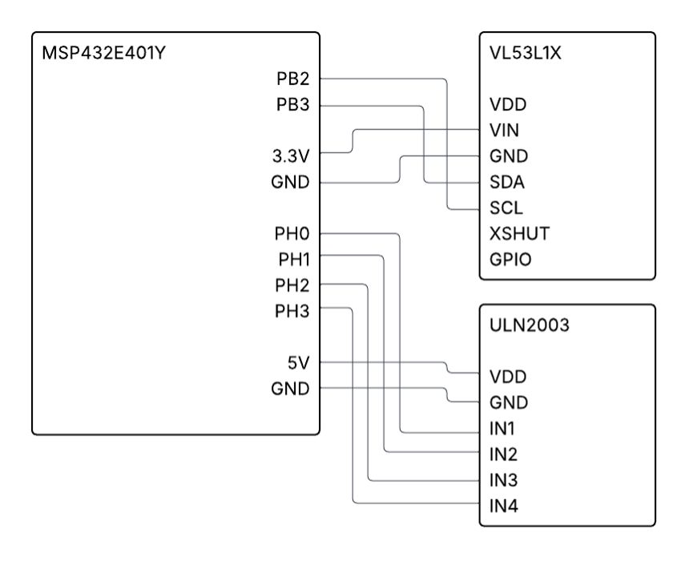

Jan - April 2026 | C · ARM Cortex-M4 · I2C · UART · Python · matplotlib
A low-cost 3D spatial scanner built on an ARM Cortex-M4 microcontroller.
A Time-of-Flight sensor mounted on a stepper motor captures 128 distance measurements per revolution across multiple scan planes.
Firmware written in C handles sensor communication, motor control, and serial data transmission.
A Python script receives the data, converts it to 3D coordinates, and renders an interactive point cloud visualization.
gallery



